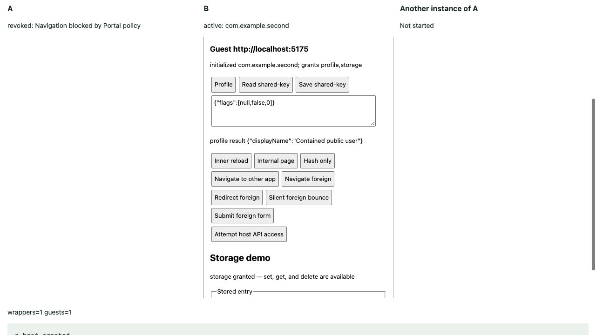

실제 화면부터 저장소까지,
허용과 차단을 함께 확인했습니다.
초기화·프로필·저장소·닫기·알림을 실제 브라우저에서 실행했습니다. 잘못된 요청이 차단되는지와 정상 요청이 계속 성공하는지를 함께 확인하고, 최종 빌드에서도 중요한 흐름을 다시 검증했습니다.
1 · 브라우저에서 확인한 사용 흐름
| 흐름 | 실제 결과 |
|---|---|
| 두 앱 초기화·프로필 | 호스트가 선택한 앱 id·권한으로 연결. 공개된 프로필 필드만 전달 |
| 저장·조회·삭제 | 일반 예제 컴포넌트가 정상 동작. 삭제한 A의 키는 null, B의 값은 유지 |
| 저장 권한 없음 | 세 동작 모두 -32000. 최종 빌드에서 제공자 호출 0회 확인 |
| 지원하지 않는 버전 | -32004 거절 → 기능 호출 -32005 → 0.1로 명시적 재초기화 성공 |
| 게스트가 닫기 요청 | 해당 Portal의 두 iframe만 제거. 새 Portal에서 기존 데이터 조회 |
| 알림·대기 요청 | 두 알림 종류 전달. 가짜 응답·알림·A 폐기 중에도 B 요청은 유지 |
| 출처·창·이동 | 잘못된 출처와 다른 창의 요청 차단. 외부 이동은 해당 Portal만 폐기 |

2 · 테스트용 화면에서도 실제 컴포넌트를 실행했습니다
const viewClient = { call };
const storageDemo = createStorageDemo(storageView, viewClient);
const closeDemo = createCloseDemo(closeView, viewClient);검증 페이지에 추가한 실제 코드입니다. call은 요청 번호를 기록하고 실제 client.call로 전달합니다. 저장소·닫기 화면은 일반 미니 앱과 같은 함수를 사용합니다.
브라우저 도구가 두 겹 iframe 안의 버튼을 직접 누르는 데 제약이 있어, 검증 페이지의 상위 버튼으로 해당 컴포넌트의 버튼을 실행합니다. 이 통로는 검증용 명령입니다. 실제 브리지는 계속 원래 출처·발신 창 검사를 거칩니다.
3 · 같은 출처라는 사실만으로는 부족합니다
if (event.origin !== peer.origin) {
return false;
}
return event.source !== null && event.source === peer.window;실제 isFromPeer 검사의 핵심입니다. origin은 메시지를 보낸 출처이고, source는 메시지를 보낸 창입니다. 둘 다 연결할 때 지정한 상대와 맞아야 합니다. 코드에는 신원을 알 수 없는 null 출처를 거절하는 검사도 있습니다.
| 실험 | 출처 | 발신 창 | 제공자 실행 |
|---|---|---|---|
| 정상 상대 | 맞음 | 맞음 | 1회 |
| 같은 출처의 다른 iframe | 맞음 | 다름 | 여전히 1회 — 차단 |
| 정상 창으로 다시 요청 | 맞음 | 맞음 | 2회 — 성공 대조군 |
| 상대 창이 외부 출처로 이동 | 다름 | 같은 창 참조 | 여전히 2회 — 차단 |
| 허용 출처로 돌아온 상대 | 맞음 | 맞음 | 3회 — 성공 대조군 |
이 표는 이동을 허용한 별도 전송 실험의 결과입니다. 출처 검사 하나와 창 검사 하나를 각각 확인하기 위한 구성입니다. 실제 Portal은 CSP로 외부 이동을 막고 해당 연결을 폐기하므로, 이 실험을 운영용 구성으로 사용하지 않습니다.
4 · 차단됐다는 결과에는 성공 대조군도 필요합니다
아무 응답이 없다는 사실만 보면, 보안 검사가 잘된 것인지 수신 코드가 아예 작동하지 않은 것인지 모를 수 있습니다. 그래서 잘못된 요청이 제공자 호출 횟수를 늘리지 않은 뒤 정상 요청이 횟수를 늘리는지도 확인했습니다.
peerWindow.postMessage(message, peerOrigin);SDK는 보내는 쪽에서도 targetOrigin을 고정합니다. 같은 창이 외부 출처에 있을 때 SDK의 표식 메시지는 전달되지 않았습니다. 외부 수신기가 살아 있다는 별도 대조군을 확인한 다음, 허용 출처로 돌아오면 SDK 표식이 전달되는 것도 확인했습니다. 대조군은 공개된 테스트 표식만 사용합니다.
5 · 거절 메시지뿐 아니라 실제 저장소 호출도 봤습니다
최종 빌드에서 profile-only B로 저장·조회·삭제를 시도했습니다. 모두 -32000으로 끝났고 제공자 로그에는 세 메서드의 호출이 한 번도 없었습니다. 이어서 권한이 있는 A의 정상 동작으로 로그가 실제로 증가하는지 확인했습니다.
Date 객체도 네이티브 메시지로 그대로 보내 봤습니다. 호스트가 -32602로 거절했고 쓰기 횟수는 4회에서 증가하지 않았습니다. 이미 저장된 JSON 값도 유지됐습니다. 잘못된 값을 문자열로 바꿔 통과시키는 처리는 하지 않습니다.
HTML처럼 보이는 문자열을 저장한 뒤 실제 저장소 UI로 조회했을 때는 문자열로만 표시됐습니다. img 요소는 0개이고 onerror가 남기도록 한 DOM 표식도 없었습니다. 미니 앱이 보낸 가짜 권한 정보는 권한을 늘리지 못했습니다.
프로필 제공자에는 가짜 비공개 필드를 함께 넣었지만, 실제 client 결과에는 displayName만 있었습니다. 실제 인증 정보는 실험에 사용하지 않았습니다.
6 · 닫기와 알림도 서로 다른 책임을 지킵니다
일반 닫기 컴포넌트가 portal.close를 호출하면 A만 사라졌습니다. B는 계속 프로필을 읽었고, 호스트가 새 A를 만들면 기존 데이터도 읽었습니다. 접수 응답을 실제로 수신한 뒤 문서가 사라진다는 보장까지 추가한 것은 아닙니다.
portal.lifecycle의 paused·resumed와 portal.environmentChanged가 B에 전달됐습니다. 그동안 대기한 B의 프로필 요청은 끝나지 않았고, 실제 프로필 응답이 왔을 때만 완료됐습니다. 구독 해제 뒤에는 새 알림 콜백이 추가되지 않았습니다.
별도로 client.close를 실행하면 기다리던 호출이 -32008로 거절됐습니다. 나중에 끝난 제공자의 응답은 결과를 바꾸지 않았고 이후 호출도 호스트 제공자에 도달하지 않았습니다. 이 동작은 client 자신의 닫기이며, 상대 연결 종료를 감지하는 규칙은 기존 SPEC §11의 미결 사항입니다.
7 · 콘솔 오류도 최소한의 대조군으로 확인했습니다
앞선 실험에서 기록된 MutationObserver.observe 오류는 이번에도 브라우저 도구 진단에 나타났습니다. 원인을 SDK로 단정하지 않고, JavaScript가 없는 HTML 세 장으로 같은 두 겹 iframe 구조를 만들었습니다.
Moonpool·Vite·앱 스크립트가 없는 정적 구조에서도 같은 오류가 재현됐습니다. 따라서 프로젝트 코드가 없어도 발생할 수 있다는 것을 확인했습니다. 브라우저/도구 환경 안의 정확한 발생 주체까지는 특정하지 않았으며, 원인을 모른 채 SDK 동작을 바꾸지는 않았습니다.
정적 대조군 소스와 실제 진단 기록을 보존했습니다. 기능 검증 결과와 이 환경 진단은 각각 근거를 남겼습니다.
8 · 필수 검사를 통과했고, 마지막 문서 정리가 남았습니다
자동 테스트 1,131개 · 39개 파일 통과
루트·전송 실험 타입 검사, Biome, 두 예제 빌드 통과
Chrome 156 개발·최종 빌드 사용 흐름 확인
수동 기록을 자동 테스트 개수에 더하지 않음
SDK 구현과 명세를 수정할 기능 실패는 발견하지 않았습니다. 이번 변경은 실제 UI를 사용하는 검증용 조작과 로그, 관찰 기록, 해설입니다. 영문 최종 검증 보고서에 결과별 증거 파일과 재현 방법을 연결했습니다.
관찰 범위는 기록한 Chrome 156 구성입니다. 모든 브라우저·URL·히스토리·메모리 회수를 보장하는 인증은 아닙니다. 문서 교체 시 오래된 응답과 상대 연결 종료 문제는 기존 명세의 미결 사항으로 유지합니다.
T19은 e2354e6 / 8f98da9로 커밋·푸시했습니다. T20 변경은 그 이후의 로컬 작업입니다. 이어서 T21 완료 기록에서 검증된 기능과 남은 한계를 공개 문서·완료 기준에 연결했습니다.